חבילת תולעים אדומות
65 ₪
גרעין רבייה של 65 תולעים לפחות, עם המצע שבו גדלו. מספיק לעציץ או למיכל קומפוסט.
להזמנה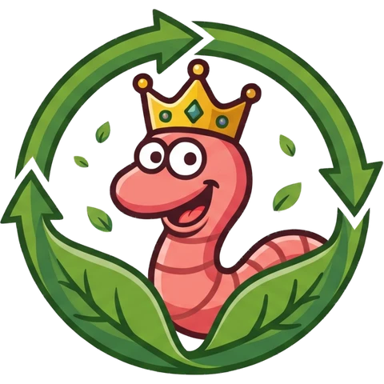
המרכז לתולעי מיחזור
תולעים אדומות הופכות שאריות מהמטבח לאדמה פורייה. אנחנו מגדלים אותן, מלמדים איך לגדל אותן בבית ושולחים אליכם גרעין רבייה מוכן להתחלה.
ככה עובד מיכל עם תולעים אדומות. בלי ריח, בלי מאמץ, ובסוף יש אדמה כהה וריחנית לעציצים ולגינה.
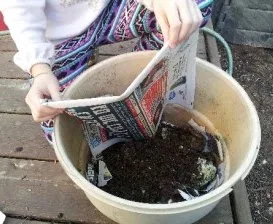
קליפות, שאריות סלט, עיתונים וקרטוני ביצים נכנסים למיכל במקום לפח.
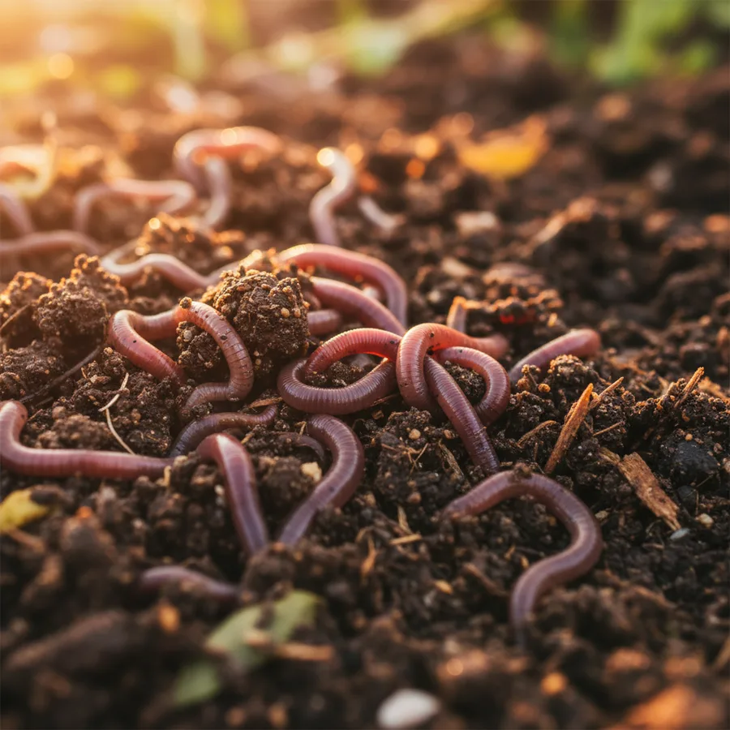
כל תולעת אוכלת כמחצית ממשקל גופה ביום, וכמות התולעים מכפילה את עצמה בערך כל חודשיים.
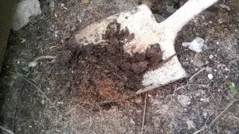
אחרי כמה חודשים, במקום הפסולת יש אדמה חומה-שחורה ללא ריח – דשן אורגני איכותי.
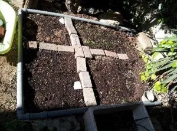
ממלאים עציצים, מדשנים את הגינה ומשקים ב"תה הומוס" – הדשן הנוזלי שמתנקז מהמיכל.
לגן, לכיתה ולבית
ילדים לומדים הכי טוב כשהם רואים בעיניים. הערכה מגיעה עם קופסה שקופה, כך שאפשר לצפות בתולעים עובדות, לראות איך שאריות הופכות לאדמה, ולהבין מיחזור דרך הידיים.
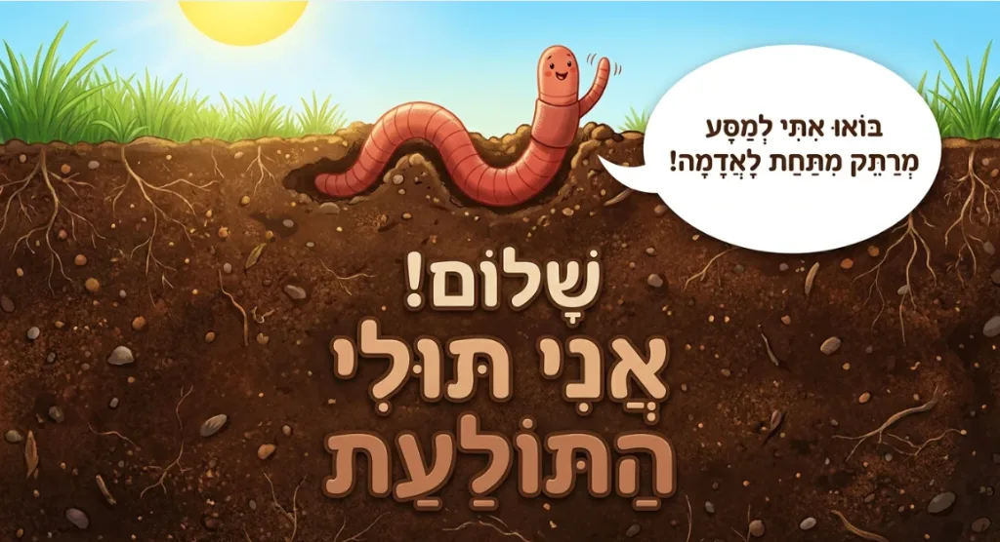
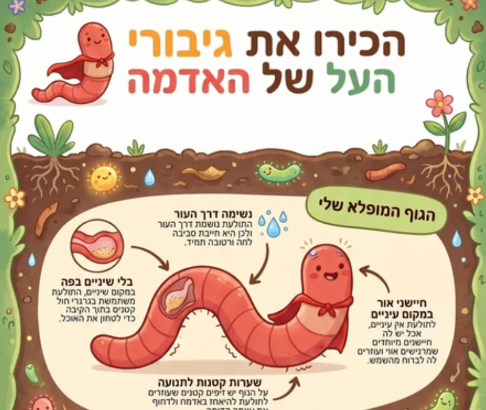
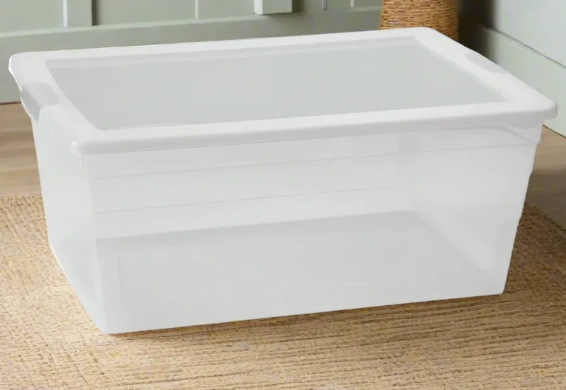
בוחרים, משלמים בביט או בפייבוקס, ואנחנו מתאמים איתכם את המסירה.
סיפור המרכז לתולעי מיחזור הוא רומן משולש בין אנשים, איכות סביבה ותולעים אדומות. הכל התחיל מאהבה תמימה לאיכות הסביבה, והפך עם הזמן לרומן של ממש עם תולעי המיחזור המופלאות, או בשמן המוכר יותר – תולעים אדומות, הידועות ביכולתן לייצר הומוס איכותי.
מהר מאוד התחביב "תפס" את כל בני הבית, בכל הגילים. אנחנו מפרידים אשפה בחדווה גדולה: בקבוקים לפח המיוחד להם, סוללות למיכל בגן של הילדים, עיתונים לפח העיתונים, ואת הפסולת האורגנית – לתולעים.
בתחילת הדרך מצאנו מעט מאוד חומר בעברית על עולמן המופלא של התולעים האדומות. עם השנים כתבנו בעצמנו חומרים לימודיים לכל מי שרוצה לגדל וללמוד על מיחזור בעזרת תולעים.
התחלנו לגדל ולמכור תולעים בשנת 2000. נדדנו בין בתים, גידלנו ילדים, והתולעים האדומות תמיד היו איתנו.
יאללה, מה כבר יכול לקרות? מקסימום תצליחו.שרית ואשד נבו
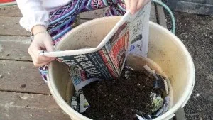
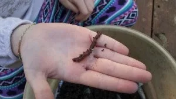
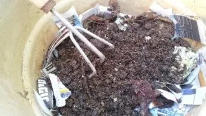
הזמינו חבילה או ערכה, ואנחנו נדאג לכל השאר. שאלות? כתבו לנו בווטסאפ או הצטרפו לקהילת המגדלים.